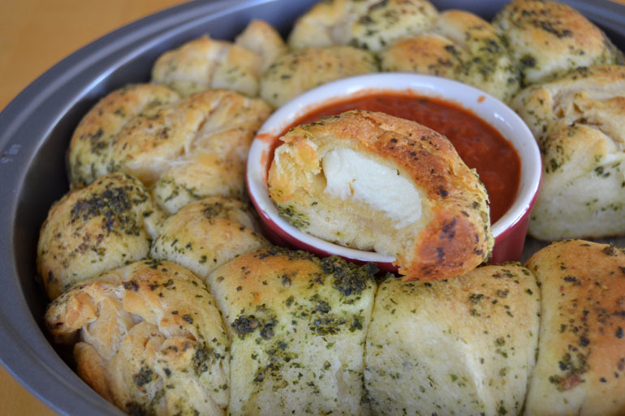

Cheese Bomb Bread

Soft, buttery bread brushed with garlic butter and stuffed with CHEESE!
Ingredients
- Refrigerated biscuit dough
- Mozzarella cheese
- Unsalted butter
- Italian seasoning
- Garlic powder
- Salt
- Fresh parsley
Steps
- Pop open a can of refrigerated biscuit dough.
- Break it into pieces.
- Stuff a piece of cheese inside.
- And bake for 10 minutes.
- While the bread bakes, melt some butter and spike it with Italian seasoning, garlic powder, and salt.
- Brush it on generously as soon as the bread emerges from the oven.